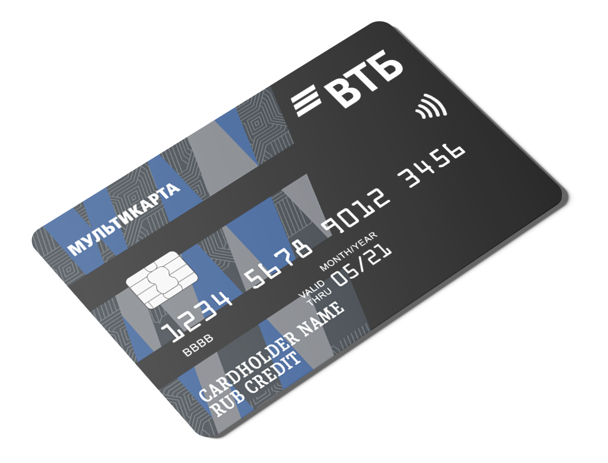

Для владельцев карт
Если у Вас возникли какие либо вопросы наша служба поддержки с
радостью готова помочь.
Ответы на частые вопросы
Сколько стоит предоставление выписки по счету?
Предоставление выписки по счету банковской карты Банк ВТБ
(ПАО)
бесплатно.
Иные справки, выписки и прочие операции В соответствии со Сборником тарифов "Расчетно-кассовое
обслуживание физических лиц в Банк ВТБ (ПАО)"
Как долго Банк выпускает карту? Где я могу ее получить?
Срок изготовления банковских карт до 7 рабочих дней.
Получить карту
можно в том же отделении, в котором вы заказывали карту. Если карта была заказана через сайт, вам
необходимо обратиться на горячую линию по номеру 1000 и уточнить отделение. Также действует услуга
курьерской доставки карты.
Хочу начать пользоваться картой, но не знаю, где конверт
с
ПИН-кодом. Как поступить в данной ситуации?
Срок доставки карты от 2 до 5 рабочих дней.
Хочу начать пользоваться картой, но не знаю, где конверт с
ПИН-кодом. Как поступить в данной ситуации?
Если ПИН-конверт утерян, для дальнейшего использования
карты
необходимо перевыпустить карту. Оформить заявку на перевыпуск можно дистанционно в Департаменте
клиентского обслуживания ВТБ по телефону 8 (495) 777-24-24 или 8 (800) 100-24-24 (звонок по России
бесплатный) либо обратившись в отделение ВТБ. При себе нужно иметь документ, удостоверяющий
личность.
Возможно, по Вашей карте предусмотрен безбумажный ПИН-код. В этом случае Вы можете уточнить его,
позвонив по вышеуказанным телефонам.
Сколько раз я могу уточнить свой ПИН-код?
ПИН-код можно уточнить не более 5 раз. При этом срок
хранения
ПИН-кода ограничен:
• по картам, оформленным в рамках Договора комплексного обслуживания (к мастер-счету):
— именные — 9 месяцев (270 календарных дней) с момента выпуска карты;
— неименные — 18 месяцев (550 календарных дней) с момента выпуска карты;
• по картам, оформленным не в рамках Договора комплексного обслуживания, — 3 месяца (90 календарных
дней) с момента выпуска карты.
Почему мою карту заблокировали, когда я переводил деньги в другой
банк на свой же счет? В чем причина?
К сожалению, такие ситуации иногда случаются. ВТБ уделяет
особое
внимание безопасности переводов, поэтому некоторые операции могут быть распознаны системами Банка
как подозрительные.
Самая частая причина блокировка карты по инициативе Банка - подозрение на мошенническую операцию.
Если система выявляет, что операция максимально рисковая, то она отклоняется. При этом сотрудник
службы мониторинга может позвонить для проверки — совершали ли вы данную операцию или нет.
Мою карту заблокировали. Что мне нужно сделать, чтобы снять
блокировку?
В случае компрометации карты или при наличии подозрений о
проведении
по счету несанкционированных операций Банк связывается с клиентом и уточняет, были ли проведены
данные операции. При возникновении любых проблем мы рекомендуем в первую очередь связаться с горячей
линией Банка по номеру 1000. Специалисты предложат варианты решения проблемы. Это может быть
временная разблокировка карты для снятия наличных или оперативный выпуск новой карты. Если вы
подтвердите операцию, то при повторном проведении она будет успешна.
Начисляется ли кэшбэк за покупки за границей?
В соответствии с Правилами предоставления и использования
банковских
карт (п. 2.13), размещенного на официальном сайте ВТБ
https://www.vtb.ru/personal/pravila-kompleksnogo-obsluzhivaniya/, за операции, совершенные за
пределами РФ, Банк не производит начисление бонусов.
Как я могу оформить перевод зарплаты на Мультикарту?
Можно оформить дебетовую Мультикарту, а затем в
бухгалтерии Вашей
организации оформить заявление на перевод заработной платы в Банк ВТБ. Если на карту будут
осуществляться перечисления с отметкой «Заработная плата», то обслуживание пакета услуг Мультикарта
будет бесплатным.
Как я могу узнать лимиты по своей карте?
Мы стремимся предоставлять услуги нашим клиентам на самом
высоком
уровне, поэтому вскоре вы сможете получать больше информации про вашу карту в личном кабинете в
ВТБ-Онлайн. Пока что мы рекомендуем обращаться в обслуживающий офис Банка, в котором был открыт
счет, для решения всех вопросов про ограничения на Вашей банковской карте.
Могу ли я узнать баланс своей карты не в банкомате ВТБ?
Да, можете. Обращаем Ваше внимание - запрос баланса в
других
банкоматах стоит 50 рублей / 0,7 ед. валюты.
Я не смог оплатить покупку в интернете, получил уведомление о том,
что к карте не подключен 3D Secure. Как мне его подключить и сколько это стоит?
Подключение 3DS осуществляется без взимания
вознаграждения. Для
этого вам необходимо позвонить на номер 1000 и подключить услугу при помощи оператора.
Мне не нужны бонусы, кэшбэк, бесплатное обслуживание, мили. Я хочу
закрыть Мультикарту. Как это сделать?
Для закрытия банковских карт и счетов, открытых на Ваше
имя,
необходимо оформить письменное заявление в любом офисе Банка. Обращаем Ваше внимание, что
дистанционно данная услуга не предоставляется.